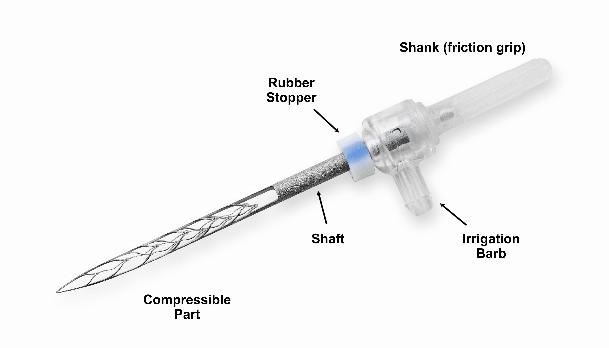

Annotation
This article describes the features of Self-Adjusting File (SAF) and equipment for working with them in the context of comparison with standard rotary tools for processing canals. The relevance of the article is justified by the need to familiarize dentists with modern equipment, as well as the low luminance of the topic of the use of the SAF system in Ukrainian and Russian sources.
The goal was to review the research work of foreign doctors to compare the effectiveness of the use of SAF-system and rotational tools.
The article is an overview, because of it the main method was the study of literary sources.
As a result of this work, it was found that the SAF-system allows you to avoid many complications and errors during endodontic treatment and retreatment, provides better chemomechanical processing of the canal, creates the condition for minimally invasive endodontic treatment.
Introduction
The uniqueness of the human body forces medicine to take more and more diverse steps towards the individualization of methods for diagnosing and treating dental diseases.

Endodontics could not avoid such a fate. For more than a century of active development of this branch of dental knowledge, many amazing properties and features of processing, filling, and especially the structure of the canals of teeth have been discovered.
Considerable emphasis is placed precisely on the individual characteristics of the structure of specific patient canals. The most accurate information about the anatomy and topography of the canals becomes the benchmark for the dentist, and the ability to go through and clean each branch is the highest goal of endodontic intervention.
The purpose of our research: to get acquainted with the features of the work of modern endodontic equipment on the example of the SAF-system based on literary sources.
The SAF System is a shaping and cleaning system designed for minimally invasive endodontic treatment. The system consists of:
- self-adjusting file;
- RDT handpiece-head;
- irrigation pump.
SAF technology allows you to effectively clean all root canals, including oval, c-shaped, curved canals. This technology uses a new concept of cleaning and shaping the canal, in which a single layer of dentin is removed around the entire perimeter of the root canal, thus avoiding unnecessary excessive removal of dentin. In addition, the method of the SAF-system does not reduce all the canals to a round shape and does not cause microcracks in the rest of the root dentine.